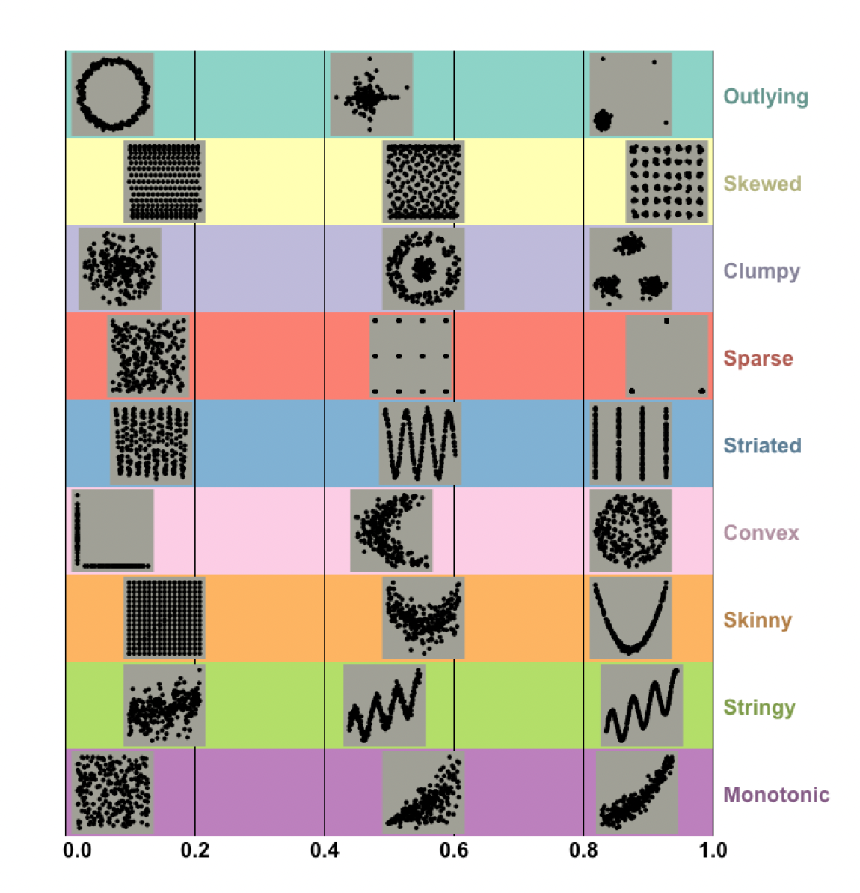

Fixing Alpha Shapes: What I Learned About the Alpha Parameter
scagnostics
cassowaryr
shape-analysis
R
In this post, I dive into the weirdness of the alpha parameter in alpha hulls, why it caused problems with the skinny index, and how I try to deal with it to uncover the real structure in my data.
Scagnostics
Lately, I’ve been exploring shape analysis in multivariate data. But instead of focusing on neat, normal, or random-looking patterns, I’ve been drawn to the weird ones, the non-normal, odd, and often more interesting shapes that pop up in scatterplots.
That curiosity brought me to scagnostics, short for scatterplot diagnostics. These measures go way beyond linear trends or correlations. They were originally inspired by ideas from John Tukey and later developed more formally by Leland Wilkinson, who gave them a solid foundation in graph theory.
Scagnostics can reveal different kinds of patterns: skewed distributions, outliers, clumpy regions, stringy or skinny shapes, convexity, and more.
One of these metrics, the skinny index, is meant to detect thin and elongated structures in the data. But when I tried to use it, I ran into something… strange.
When “Skinny” Didn’t Seem Skinny Enough
The formula for the skinny index looks like this:
\[ \text{Skinny} = 1 - \frac{\sqrt{4 \pi \cdot \text{Area}(A)}}{\text{Perimeter}(A)} \]
Here, ( A ) is the alpha shape (or alpha hull) of the point cloud, a flexible shape that wraps around the data, more precisely than a convex hull. If the shape is thin and long, the result should be close to 1. If it’s round, the score drops toward 0.
I ran simulations using different data structures. One of the simplest ones I tried was a U-shape, built from a polynomial of degree 1 on the x-axis and degree 2 on the y-axis.
This shape was clearly long and skinny. In fact, Wilkinson’s paper even shows a nearly identical example as a high-skinny pattern.

But when I ran this through the cassowaryr package in R, I was shocked to get a skinny score of around 0.18.
[1] "The skinny value from cassowaryr is: 0.184893805878199"Something Was Wrong
At first, I thought maybe I messed up the structure. So I tried other shapes. Same problem.
That’s when I decided to look deeper into the alpha parameter that powers the alpha shape.
Understanding Alpha (and Why It’s Tricky)
The alpha parameter controls how tightly the alpha shape wraps around the data:
- If alpha is small, the shape becomes more detailed, it captures indentations, curves, and fine structure.
- If alpha is large, it behaves more like a convex hull, creating a looser, oversimplified boundary.
So I thought: maybe the default alpha is too high? I changed it by lowering the alpha, trying various values manually, hoping to get the shape to match the U-structure more accurately.
But no matter what, I ran into new problems:
- When the alpha value was very small, the alpha shape couldn’t be constructed at all. As I increased it slightly, it started connecting only the dense regions, but again, it just formed small bowls instead of capturing the full shape.
- When alpha was too large, it would just connect the tips and form a big bowl, losing the skinny structure entirely.
Even worse: using a small alpha sometimes gave me a skinny score close to 1, but visually, the shape wasn’t even capturing the whole structure, it was just hugging the middle, throwing away the rest.
That’s when I realized: the problem isn’t just the alpha value, it’s how the alpha shape fails to connect sparse or tail regions when the points are far apart.
.jpeg)
.jpeg)
.jpeg)
.jpeg)
A New Idea: Bring in the MST
I started thinking: what if I combine alpha shapes with another graph that’s guaranteed to connect everything?
That led me to the Minimum Spanning Tree (MST), a graph that connects all points with the shortest total distance, without any loops. It’s a staple in graph theory and used in other scagnostics too.
The MST doesn’t care about density, it connects all points, even sparse ones.
So here’s the plan I came up with:
- Use the 90th percentile of MST edge lengths to compute the alpha parameter (as suggested by Wilkinson).
- Then, draw both the MST and the alpha shape.
- Finally, combine them, take the union of the alpha shape and the MST.
That way:
- The alpha shape captures the dense, detailed parts of the structure.
- The MST fills in the missing connections, especially in the tails or sparse zones.
Alpha shapes alone can miss key structure when the data is too sparse or oddly shaped.
MSTs, on the other hand, never miss, but they’re too simple to describe detailed boundaries.